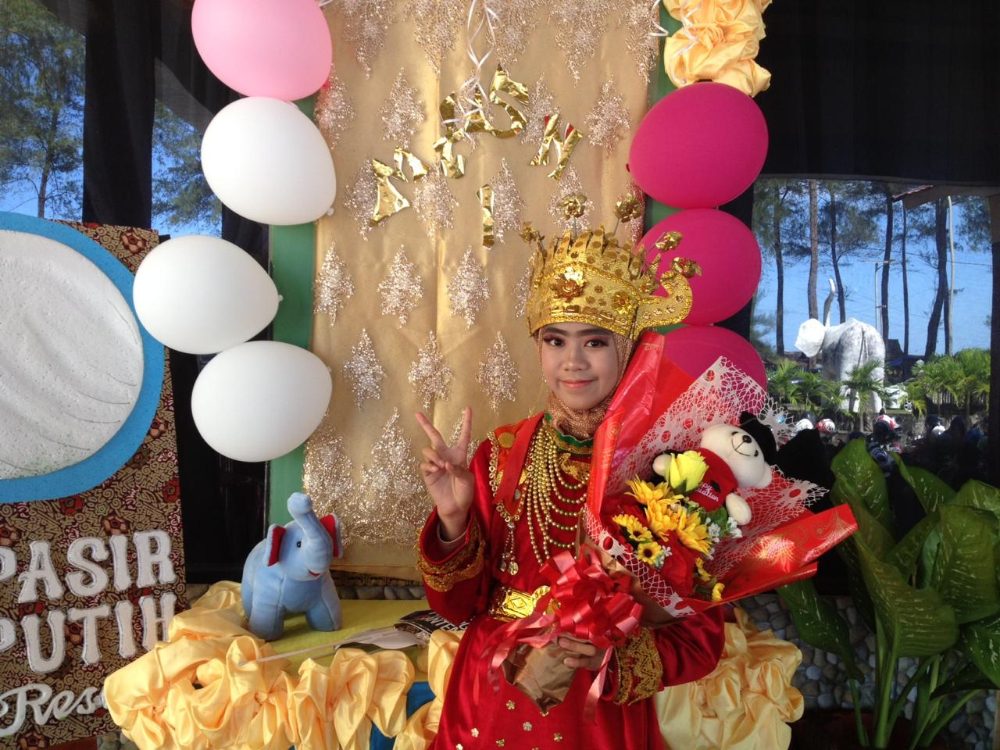
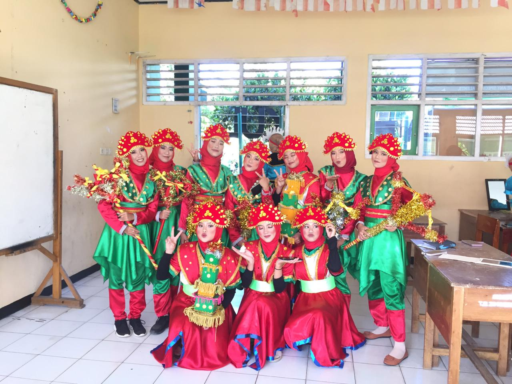

Sejak kecil, saya telah memiliki minat yang mendalam terhadap tari tradisional. Bagi saya, setiap tarian tidak hanya menjadi sarana ekspresi seni, tetapi juga menyampaikan keunikan budaya dari berbagai daerah di Indonesia. Minat ini membawa saya untuk aktif berpartisipasi dalam berbagai penampilan yaitu:
Pada acara perpisahan SMP saya, saya berkesempatan untuk menampilkan Tari Persembahan Bengkulu sebagai bagian dari upacara pembukaan. Dalam penampilan ini, saya mengenakan pakaian adat Bengkulu yang indah. Tari Persembahan Bengkulu adalah tarian tradisional yang sering dipertunjukkan dalam acara penting sebagai bentuk penghormatan dan sambutan bagi tamu yang datang. Gerakan dalam tarian ini biasanya lembut dan penuh makna, menggambarkan keanggunan serta keramahan masyarakat Bengkulu.
Pada penampilan ekstrakurikuler di SMA saya, saya berkesempatan untuk menari Tari Tabot sambil membawa replika tabot. Tari Tabot merupakan tarian tradisional yang berasal dari Bengkulu, yang memiliki nilai sejarah dan budaya yang mendalam. Tarian ini biasanya dipentaskan sebagai bentuk penghormatan terhadap peringatan hari besar keagamaan, dengan membawa replika tabot yang melambangkan simbol-simbol keagamaan dan budaya.
